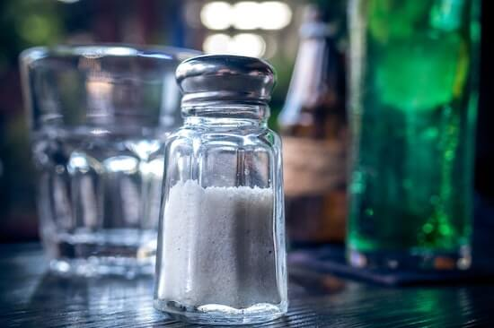
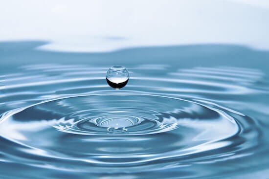

FACE FAT CALCULATOR
The Face Fat Calculator is a visual fat calculator that uses artificial intelligence to determine your overall body fat percentage using just a picture of your face.
All you have to do is take a selfie (like the picture below) and upload it using our custom face fat calculator. You will receive your overall body fat percentage within 5 seconds (based on the closest body fat percentage range).

It is important to remember that this number is just a rough estimate as factors such as height, body shape and overall fat distribtion is not taken into account.
FACE FAT CALCULATOR
Face Fat Model Updated: March 8, 2020

Why is my face fat but my body skinny?
There are many reason why you might have a fat face with a skinny body but here are some of the main culprits:
Inflammation
Genetics
Not Getting Enough Sleep
Not Exercising
Not Drinking Enough Water
Being on Certain Medications
Abusing Drugs or Alcohol
Poor Nutrition
How to Lose Face Fat?
Having a puffy face does not necessarily mean you have a high body fat percentage. The shape of your face can fluctuate from day to day depending on the food you eat (due to inflammation). Just remember, as you keep slimming down, your face will gradually get more toned.
So, let’s look at some practical changes you can make in your life to reduce the puffiness in your face. You can lose face fat by:
Reducing your overall body fat percentage
Reducing sodium and refined carbohydrate intake
Limiting alcohol consumption
Drink more water
Getting more sleep
Reducing Your Overall Body Fat Percentage
It is not possible to lose fat in your face without reducing your overall body fat percentage. You need to first set yourself on the path to losing weight before any facial sculpting can begin. Spot reduction procedures such as Cool Sculpting are only temporary fixes, so don’t bother with it.
Set out to clean out your diet and improve your lifestyle over the next two years. Two years might seem long but it will give you that chance to make mistakes along the way.
The two-year timeframe is important because you don’t want to set an unrealistic timeframe, fail and get depressed because you haven’t achieved your goal. Severely restricting your calories in the hopes of toning your face actually reduces your Body Metabolic Rate, which in turn makes it much harder to lose overall fat.
You will notice subtle changes in your appearance when you begin your diet as the fat drops. Make sure to take pictures to track the changes in your appearance. Getting a slimmer face is possible if you are willing to give it time and maintain a good diet all year round.
Reducing Sodium and Refined Carbohydrates Intake
Foods high in refined carbohydrates such as chips, bread, cereal, rice, and pasta are usually heavily processed and contain empty calories, lack the nutritional fiber that helps with digestion and causes insulin spikes in the blood that lead to higher fat storage.
If you are serious about losing fat in your face, you must eliminate refined carbohydrates.

Most of these refined carbohydrates are also heavily laced with sugar and salt. The excessive sodium leads to bloating and puffiness in the face, which in no way helps you look good. Another side effect of excess sodium is water retention which makes you look heavier than you really are.
Limiting Alcohol Consumption
Limiting alcohol consumption is a sure-fire way to lose weight. This is because alcohol is full of empty calories without nutritional value. When you drink alcohol, the liver stops breaking down fats, carbohydrates or protein as it is must process alcohol first (since alcohol is also a macronutrient), meaning the fat burning process is instantly brought to a halt.
Alcohol also causes dehydration, which in turn makes your body retain water causing bloating and puffiness in your face. Therefore, if you are serious about slimming your face, you need to give alcohol a break.
The best way to do this is by giving up alcohol for a couple of months and see how you feel. I went completely dry and included fasting for 3 months and was surprised by how much my skin and overall appearance improved. You can slowly introduce alcohol after your abstinence period and reap the benefits from this short break.
Drink More Water
Water helps flush out toxins from your body and improve skin tone. It also helps you lose extra weight. This is because water is known to increase your metabolism and help maintain satiety i.e., keeping you full for longer periods so you don’t overeat.
It also reduces the puffiness in your face and gets rid of the bloating from excessive sodium consumption. This is why you should drink water before, during and after your meals.

No matter what diet plan you might be on, drinking more water is always recommended. Give up the sugary beverages and carry a water bottle wherever you go. This will not only save you money but help in reducing your waistline as well.
Almost every dermatologist recommends drinking more water for a slimmer face and better-looking skin. Water is free, so what’s the excuse for not making it part of your overall weight loss plan?
Getting More Sleep
When the body is deprived of sleep, the level of cortisol (stress hormone) and ghrelin (hunger hormone) increase leading to a state where you begin salivating for fried and highly refined foods. No wonder those donuts taste so good in the morning when you haven’t had a good night’s sleep.
We all need our beauty sleep to look good. If you are unable to get a good night’s sleep on a regular basis, say goodbye to that dreamy face you’ve always wanted. Not only will you gain more eating as a result of being sleep deprived but get ready to look extra terrible as well.
If you want to break your daily craving, make sure you sleep well. Sleep early if you need to. Having a routine where you sleep and wake up at the same time every day will help you eat less and keep you looking the best.
Takeaway Points
1. Reduce your overall body fat percentage first by sticking to a clean diet.
2. Stay away from fried and high refined foods that contain a lot of salt and sugar. These foods are not helping your appearance. Instead, stick to foods that do not contain multiple ingredients.
3. Cut down on the booze or even give it up altogether for a couple of months if you are serious about looking good and improving your skin. Remember, drinking alcohol stops the fat burning process and gives you ‘alcohol munchies’ instead. It’s no wonder bars can sell you overpriced chicken wings and fries and you gladly give them your money.
4. Drink water. If you are looking for a cheap way to lose fat in your face, there’s nothing cheaper than water. Leave the sugary drinks alone.
5. Most importantly, make sure you get a good night’s sleep every night. When you are well-rested, you crave fatty fried foods less. Not only will you not overeat, but being well-rested with result in your looking your Sunday best, every day of the week.
Other Body Fat Calculators
A.I. Body Fat Percentage Calculator
U.S. Military Body Fat and BMI Calculator
Skinfold Caliper Body Fat and BMI Calculator
Get One Free Daily Motivational Quote to Your Email
What happens to my picture when I upload it?

We DO NOT STORE your image. The image belongs to YOU and only YOU.
Disclaimer
None of the website's content is meant to be taken as medical advice.
Speak to your healthcare professional for medical advice
I Lov Guitars Inc. will not be held liable for any claim, damage or other liability arising from, out, or in connection with using this web application and its content.
As a way of generating revenue to sustain this web app, estimatebodyfat.com is a member of Amazon’s Affiliate program and Clickbank's Affiliate Program and may earn a commission if you decide to buy any of the products recommended.
Credits
Special thanks goes out to Rachel Thomas and Jeremy Howard from Fast A.I. without whom this web application would not be possible. This application is built based on Jeremy's Bear Classifier WebApp. If you are interested in learning about Deep Learning and how you can use AI in your projects, Fast AI holds free courses anyone can take on their website. Please do give them a look if you are curious.
In addition to Fast A.I., this web application also uses the Croppie Plugin and custom made Haar Cascades .
I would also like to thank Dr. Jason Fung for writing such a life-changing book on solving Obesity and Harrison's Free tutorials on Haar Cascades
Images used on Estimate Body Fat have been obtained from Royalty Free Sites or purchased from Stock Repositories.
If you notice a discrepancy with anything, feel free to send me a message at contact@estimatebodyfat.com
Disclaimer
None of the website's content is meant to be taken as medical advice.
Speak to your healthcare professional for medical advice
I Lov Guitars Inc. will not be held liable for any claim, damage or other liability arising from, out, or in connection with using this web application and its content.
As a way of generating revenue to sustain this web app, estimatebodyfat.com is a member of Amazon’s Affiliate program and Clickbank's Affiliate Program and may earn a commission if you decide to buy any of the products recommended.
Credits
Special thanks goes out to Rachel Thomas and Jeremy Howard from Fast A.I. without whom this web application would not be possible. This application is built based on Jeremy's Bear Classifier WebApp. If you are interested in learning about Deep Learning and how you can use AI in your projects, Fast AI holds free courses anyone can take on their website. Please do give them a look if you are curious.
In addition to Fast A.I., this web application also uses the Croppie Plugin and custom made Haar Cascades .
I would also like to thank Dr. Jason Fung for writing such a life-changing book on solving Obesity and Harrison's Free tutorials on Haar Cascades
Images used on Estimate Body Fat have been obtained from Royalty Free Sites or purchased from Stock Repositories.
If you notice a discrepancy with anything, feel free to send me a message at contact@estimatebodyfat.com